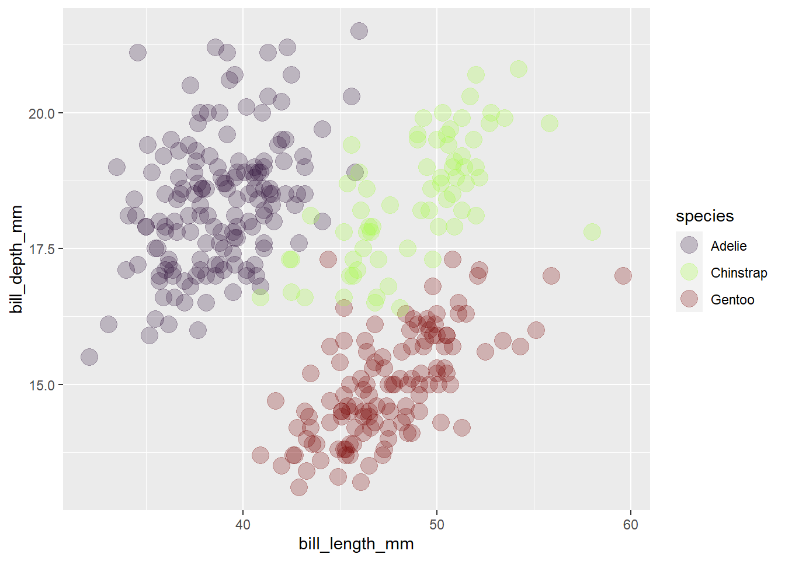

ev_1 <- list(tabla_de_datos = data.frame(columna_1 = c(0.2, 2.5, 3.14, 4.15, 5.55),
columna_2 = c("A", "B", "C", "D", "E"),
columna_3 = c("1985-10-14", "2021-12-25", "2023-01-01", "1999-05-06", "1900-01-02")),
vector_ejemplo = c("F", "T", "F", "T","F"),
escalar_ejemplo = 100)Autoevaluaciones Template
Template para contestar las autoevaluaciones
Instrucciones
Lee cuidadosamente las siguientes instrucciones, para la entrega final del reporte, borra las mismas (desde la linea 21 hasta la linea 47) y entrega unicamente desde el apartado de Autoevaluacion # 1. En el caso de no hacerlo, deducire 10% de la nota final del trabajo.
Utiliza este template para responder las preguntas de las autoevaluaciones que hemos ido contestando a lo largo del curso.
Para ello, investiga de que manera puedes resaltar las respuestas (tip: usa el editor visual de Quarto, en la barra de herramientas, bajo la opcion formato busca como puedes hacer notar tu respuesta).
En el caso de que la respuesta no conste en el listado de opciones, indica cual es la respuesta correcta.
En el encabezado de este documento cambia acordemente el author por tu nombre.
El formato de entrega del reporte es de tu eleccion. Recomiendo entre html o docx, ya que dar formato en pdf es especialmente dificil.
IMPORTANTE!
Para la entrega del reporte, comprime en un archivo zip o rar toda la carpeta de tu proyecto y enviala a mi correo. Necesito ver como modificaste el codigo y si el trabajo renderizado corresponde al mismo.
Calificacion
La nota maxima de este trabajo es de 100%. La nota minima para aprobar el curso es de 70%.
La valoracion de cada Autoevaluacion (A) es la siguiente:
| A1 | A2 | A3 | A4 | A5 | A6 | A7 | A8 | A9 | A10 | A11 | A12 | A13 | |
| % | 5 | 5 | 5 | 5 | 5 | 5 | 5 | 10 | 5 | 10 | 10 | 5 | 25 |
Fecha de entrega
La fecha maxima de entrega de este trabajo es hasta la media noche del 25 de Noviembre del 2023.
Autoevaluacion # 1
|
V / F |
|
V / F |
|
V / F |
|
V / F |
|
V / F |
|
V / F |
|
V / F |
|
V / F |
|
V / F |
|
V / F |
En tu computador, ejecuta en el prompt la siguiente línea de código:
?sd.
|
V / F |
|
V / F |
|
V / F |
|
V / F |
Autoevaluación # 2
Dado el siguiente objeto:
Es el elemento
vector_ejemploconformado por valores: Lógicos/caracteresPara acceder a la tercera fila de la primera columna del elemento
tabla_de_datos, ¿Cuál(es) de las siguientes líneas de código es(son) la(s) correcta(s)?
ev_1$tabla_de_datos[[1]]
ev_1$tabla_de_datos[1, 3]
ev_1[[1]][3, 1]
ev_1$tabla_de_datos$columna_2[3]
ev_1[[2]][3, 1]
ev_1$tabla_de_datos$columna_1[3]- Deseo concatenar los elementos
escalar_ejemploconvector_ejemplo(en ese orden) en un elemento adicional del objetoev_1de nombreconc_ejemplo, ¿Cuál de las siguientes líneas de código es la correcta?
ev_1[[4]] <- ev_1[[2]] + ev_1[[3]]
ev_1$conc_ejemplo <- c(ev_1[[3]],ev_1[[2]])
ev_1$conc_ejemplo <- c(ev_1$vector_escalar + ev_1$ejemplo_escalar)Deseo reemplazar el cuarto elemento de
columna_2en latabla_de_datospor la letra"E", ¿Cuál sería una solución?Supongamos que para un determinado análisis con
tabla_de_datos, lacolumna_2corresponde a mi factor. En este factor mi nivel de referencia es “E”. ¿Cómo especifico en R que este sea el caso?La variable
columna_3detabla_de_datosdenota fechas, ¿Cómo darías el formato adecuado para que R la interprete como tal?
Autoevaluación # 3
|
V / F |
|
V / F |
|
V / F |
|
V / F |
|
V / F |
Usando la variable disp de mtcars:
|
a) 220.9 b) 139.0 c) 230.7 d) 401.2 |
|
a) 33.1 b) 123.9 c) 120.2 d) 210.7 |
|
a) 1095.6 b) 15360.8 c) 14448.0 d) 44394.5 |
|
a) 71.1 b) 120.8 c) 196.3 d) 326.0 |
|
a) 0.45 b) 0.15 c) 0.54 d) 0.82 |
Autoevaluación # 4
Carga los datos de base iris y aparea los siguientes literales
a) Media aritmética de b) Número total de observaciones c) Desv. Est. de d) Valor mínimo de e) Frecuencia relativa de la especie f) Frecuencia acumulada hasta especie |
a) 66.67% b) 150 c) 0.33 d) 5.84 e) 2 f) 0.762 |
Autoevaluación # 5
|
V/F |
|
V/F |
|
V/F |
|
V/F |
|
V/F |
|
V/F |
|
V/F |
|
V/F |
|
V/F |
Autoevaluación # 6
|
a) Medidas de calidad de aire en Nueva York b) Medidas de contaminación de aire c) Medidas de presión atmosférica en UK |
|
a) Da igual, no es necesario b) Puede provocar errores porque c) Solo es necesario en Windows |
|
a) El archivo .csv creado contendrá una columna extra indicando el número de fila b) El separador de columnas será el punto y coma en lugar de la coma c) No pasa nada |
mtcars es una tabla de base R.
|
V/F |
En el siguiente código:
tabla_cars <- mtcars
head(tabla_cars)
tabla_cars$marca <- row.names(tabla_cars)
tabla_cars %>%
pivot_longer(-c("marca"),
names_to = "variable",
values_to = "valores")
|
V/F |
|
a) Cambiando los nombres de las columnas de b) Extrayendo los nombres de las filas de c) Creando una nueva variable con los nombres de las marcas de autos |
|
a) Transformando de formato largo a ancho b) Transformando de formato ancho a largo c) Preparando la tabla para exportar |
|
a) Que estamos borrando la columna “marca” de b) Que excluya “marca” del pivot c) Ninguna de las anteriores |
Autoevaluación # 7
theme_lightproduce gráficos como

- El siguiente gráfico

Es producido por el(los) código(s):
ggplot(iris, aes(y=Petal.Width)) +
geom_boxplot(aes(fill=Species))ggplot(iris, aes(y=Petal.Width, color=Species)) +
geom_boxplot()ggplot(iris, aes(y=Petal.Width, fill=Species)) +
geom_boxplot()- Para obtener el siguiente gráfico:

Debo modificar la última línea del código:
ggplot(data = penguins,
mapping = aes(x = bill_length_mm,
y = bill_depth_mm,
color = species)) +
geom_point(alpha = 0.25, size = 5) +
scale_color_viridis()por:
scale_color_viridis(option = "G")scale_color_viridis(discrete = T, option = "G")scale_color_viridis(discrete = T, option = "H")
Autoevaluación # 8
EN ESTA PREGUNTA, CARGA LA TABLA DE DATOS rotXLS.xlsx Y CAMBIA DE MANERA ACORDE LAS OPCIONES DE LOS CHUNKS DE CODIGO PARA QUE RENDERIZAR LAS FIGURAS TAL CUAL LA DIAPOSITIVA 26 DEL MODULO 3 DEL CURSO
Los datos del archivo de excel “rotXLS.xlsx” que mencionamos brevemente en el segundo módulo contiene información sobre el conteo de casos de rotavirus en Berlín desde el año 2001 hasta el 2020. Las variables de esta tabla de datos son:
date: fecha de cierre de la toma de datoscases: número de casos de rotavirus en la semanaweek: semana epidemiológicaincidence: número de casos/100000 habitantesFM: media diaria de velocidad del viento (m/s)RSK: media diaria de lluvia (mm)
SHK_TAG: media diaria de nieve (cm)PM: media diaria de presión atmosférica (hPa)TMK: media diaria de temperatura (°C)TXK: media diaria de temperatura máxima (°C)TNK: media diaria de temperatura mínima (°C)UPM: media diaria de humedad relativa (%)
Una vez que hayamos especificado el directorio de trabajo, podemos importar esta tabla con el siguiente código:
library(readxl)
rot_berlin <- read_excel("rotXLS.xlsx")- Ignorando por un momento la naturaleza longitudinal de estos datos, podemos crear un gráfico de múltiples cajas de bigotes por semana epidemiológica para el número de casos, que se vería de esta manera:
ggplot(rot_berlin, aes(x = week, y = cases, group = week)) +
geom_boxplot()Con el siguiente código:
ggplot(rot_berlin, aes(x = week, y = cases)) +
geom_boxplot()ggplot(rot_berlin, aes(x = factor(week), y = cases)) +
geom_boxplot()ggplot(rot_berlin, aes(x = week, y = cases, group = week)) +
geom_boxplot()- Con lo que hemos aprendido hasta el momento, si quisiéramos identificar y remover posibles outliers, podríamos usar el siguiente código:
out_rot <- boxplot(cases ~ factor(week), data = rot_berlin, plot = F)$out
sub_rot <- rot_berlin
sub_rot <- sub_rot[-which(sub_rot$cases %in% out_rot), ]El número de outliers detectados es:
- 232
- 323
- 156
- 212
- Mirando el gráfico de cajas y bigotes de
sub_rot, podríamos llevar a cabo sucesivas nuevas identificaciones y remociones de outliers hasta terminar con un gráfico ya sin puntos fuera de los RIC. Teniendo en cuenta esto, cuál(es) de las siguientes afirmaciones es(son) verdadera(s)
ggplot(sub_rot, aes(x = week, y = cases, group = week)) +
geom_boxplot()No importa cuántas veces repita el proceso, eliminar todo outlier es una buena práctica
Al eliminar un outlier, no hay garantía que otra observación se convierta en uno.
Se aconsejaría remover outliers una sola vez, y continuar con los análisis.
Parecería que el RIC no sería un criterio suficiente para remover outliers.
Autoevaluación # 9
La concentración media de glucosa en ratones sanos se ha estimado en un rango entre 80 y 100 mg/dL. En un experimento, se han medido las siguientes concentraciones de glucosa en 10 ratones de una línea genética se presume tendría potencial de ser modelo de hiperglucemia después de unas cuantas más generaciones de cruce selectivo:
glc_rat <- c(108.7, 93.7, 52.7, 79.0, 74.7, 131.9, 99.5, 63.3, 98.6, 92.7)- La media aritmética \(\overline{X}\) de la muestra es:
- 89.5
- 85.5
- 91.8
- 100.1
- La desviación de estándar \(s\) de la muestra es
- 30.6
- 18.0
- 15.6
- 22.7
- El intervalo de confianza (bajo la distribución de Student) es
- [81.4, 95.3]
- [80.4, 97.3]
- [83.7, 95.3]
- [83.7, 100.3]
Autoevaluación # 10
En esta autoevaluación, usaremos tablas de datos del paquete UsingR y datarium:
- La tabla de datos
blood(paqueteUsingR) tiene las medidas de presión sistólica de sangre correspondientes a 15 pacientes (columna “machine”). De acuerdo al Centro de Prevención y Control de Enfermedades de los Estados Unidos (CDC), una presión sistólica saludable está por debajo de 120 mm Hg. Determina si la media de la muestra contenida en esta tabla de datos está por debajo de este valor sugerido por el CDC.
data(blood)
blood- La tabla de datos
normtemp(paqueteUsingR) tiene las medidas en grados Fahrenheit de temperatura corporal (columna “temperature” ) correspodientes a 65 mujeres y 65 hombres (columna “gender”). Determina si existe una diferencia entre las temperaturas corporales de hombres y mujeres.
data(normtemp)
normtemp- La tabla de datos
mice2(paquetedatarium) tiene las medidas del peso de 10 ratones antes y después de haber sido sometidos a una determinada dieta. Encuentra si existe una diferencia significativa en el peso de estos ratones antes y después del régimen de dieta al que fueron expuestos. ¿Ganaron o perdieron peso?
data(mice2)
mice2- En el paquete
UsingRtenemos disponible una lista con 5 objetos bajo el nombrecancer. Esta contiene el tiempo de sobreviviencia en días de pacientes con distintos tipos de cáncer desde el momento de su diagnóstico hasta su deceso. Chequea si los datos correspondientes a cáncer de colon son normalmente distribuidos. Si no lo son, prueba si puedes normalizarlos usando alguna de las tres transformaciones que vimos. En el caso que más de una transformación funcione, ¿cuál escogerías para continuar con alguna prueba estadística, y por qué?
Tip: usa el siguiente código para extraer en un vector los datos de pacientes con cáncer de colon:
data(cancer)
colon <- cancer$colonAutoevaluación # 11
Con el vector de nombre
colonque creaste en la anterior autoevaluación, aplica una prueba de Wilcoxon para una muestra bajo la hipótesis de que la mediana de los días de superviviencia de un paciente con cáncer de colon es de 370 días.A partir de la tabla de datos de felicidad de la Prof. Navarro, lleva a cabo una prueba de Wilcoxon para dos muestras emparejadas de la felicidad de los estudiantes antes y después de recibir una clase de Estadística. Compara el resultado con la prueba de una muestra que usé de ejemplo. ¿Por qué no hay diferencia?.
Autoevaluación # 12
- Encuentra si existen diferencias en la longitud nariz-cloaca al emerger (
SVL.initial) con respecto a los predadoresPreden los datos de Touchon. ¿Qué método es factible usar?, ¿ANOVA de una vía o Kruskal-Wallis?
Autoevaluación # 13
Lleva a cabo un ANOVA de dos vías para las variables
Resorb.daysy los factoresPredyRes. La pregunta a investigar es saber si existe una interacción entre la presencia de predadores a distintos niveles de recursos que afecte el tiempo de reabsorción de la cola en los renacuajos de ranas arbóreas de ojos rojos.A pesar de que el modelo para
Resorb.dayque acabas de hacer cumple con los supuestos del ANOVA, solo por aprendizaje, conduce una prueba de Kruskal-Wallis usando los mismos factores.